RULES
Classic Mode
Teams
The game is played on a 11x11 sized board.
There are two playing teams: the Defender and the Attacker.
-
The Defender team is composed by 12 Basic Pieces and one King,
which are initially placed in the middle of the grid (see image below), with the
King placed on the Throne, which is the central cell of the grid.
The goal of the Defender team is to make the King reach one of the Exits
(four special cells placed at each corner of the grid) without getting caught
by the Attacker team. In the classic mode, the capture of the King happens
when it is sorrounded by four opponent's pieces in the adjacent cells
(north, east, south and west directions). The Defender also wins when all the
pieces of the Attacker have been killed.
-
The Attacker team is composed by 24 Basic Pieces, which are
initially distributed along the borders of the grid (see image below).
The goal of the Attacker is to catch the King before it reaches one of the Exits;
the capture is performed in the way described above.
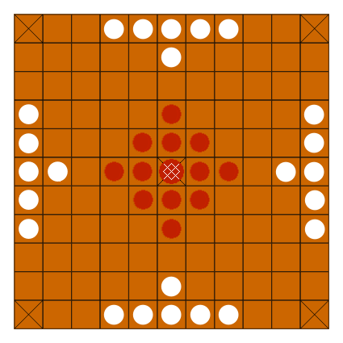
[Credits to:
https://commons.wikimedia.org/wiki/File:Hnefatafl_setup.png
]
Cells
In the classic mode, there are three types of cells.
-
The Basic Cells, which cover all the positions in the board where
special cells are not present.
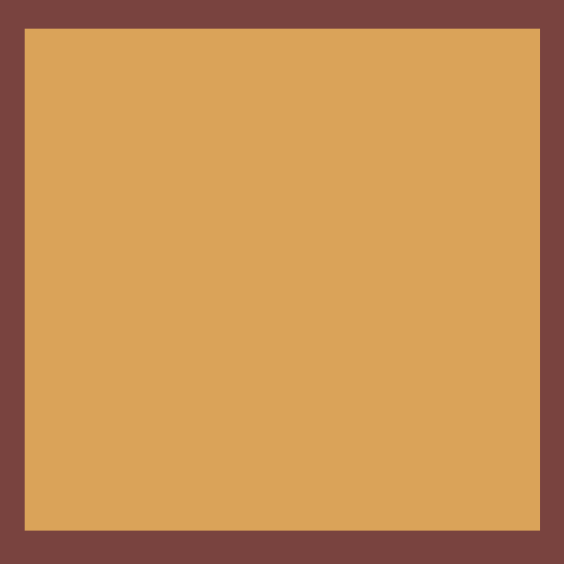
-
The Throne, which is the central cell of the board, where the King is initially placed.
Only the King can occupy or pass through it.
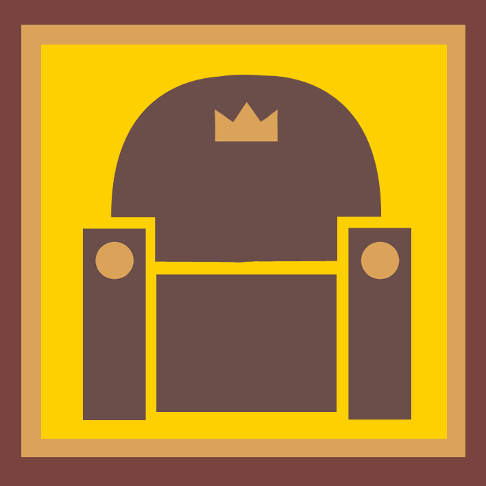
-
The Exits. There are four of them on the board, one at each corner;
if the King reaches one of them, then the Defender wins. Obviously, Exits cannot be
occupied by any other piece apart from the King.
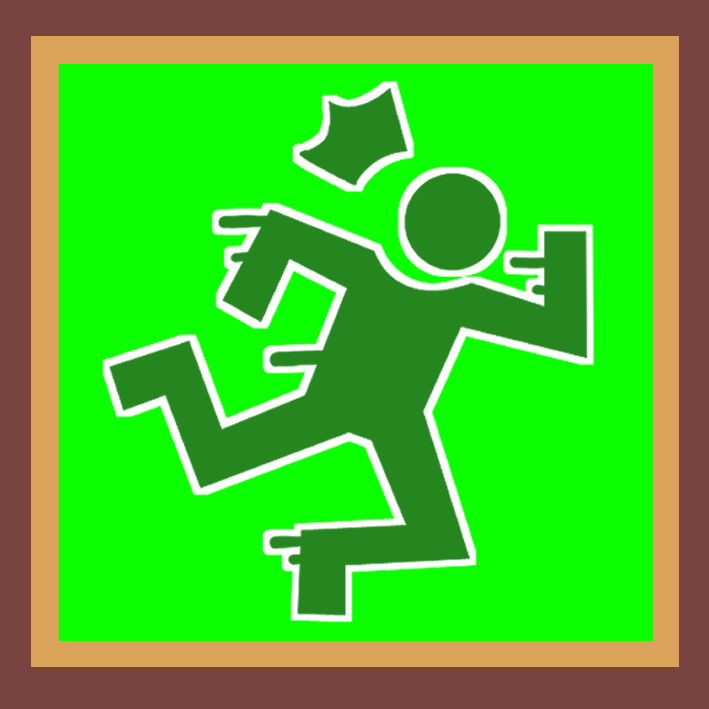
Pieces
In the classic mode, there are two types of pieces:
-
the Basic Piece;
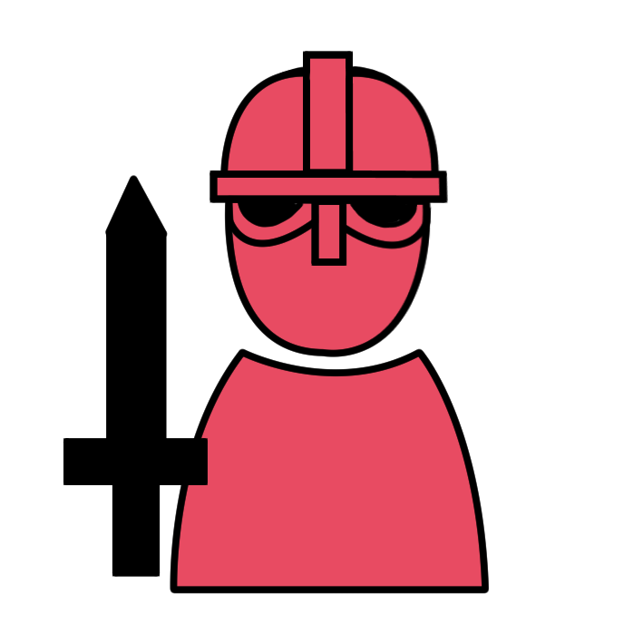
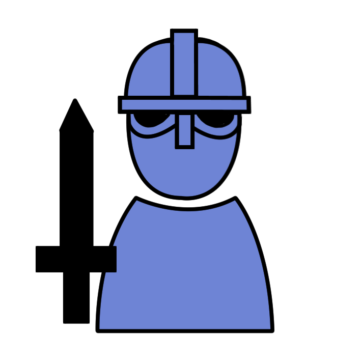
[Basic Pieces of the Attacker and the Defender respectively]
-
the King.
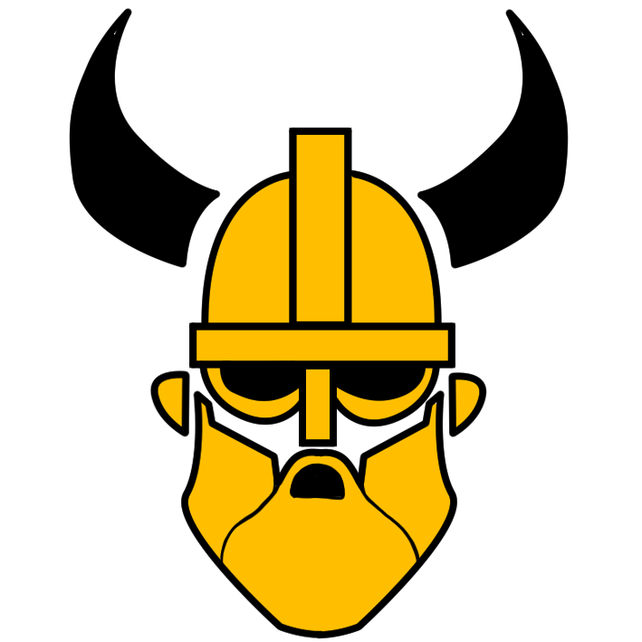
All the pieces can be moved vertically and horizontally,
as long as all the cells covered by the movement are not occupied by any other pieces.
The killing of a Basic Piece is performed when two opponent's pieces are placed in two
adjacent cells at opposing sides of the targeted piece. The killing of the King, instead,
requires the positioning of four Attacker's pieces on all the four adjacent cells, as
described before.
Variant Mode
Compared to the classic version of the game, the variant mode includes
four types of special pieces and two types of special cells.
-
The Slider cell makes the piece that lands on it slide in the furthest
reachable position in the direction shown on the cell. These special cells appear and
disappear periodically every few turns, changing the direction of the sliding each time.
-
The Tomb is a special cell that spawns on a cell where a piece gets killed.
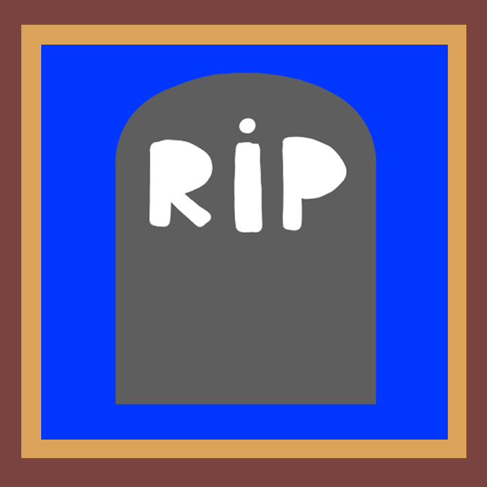
-
The Queen is able to bring killed allied pieces back to life, by moving to a cell
that is adjacent to a Tomb.
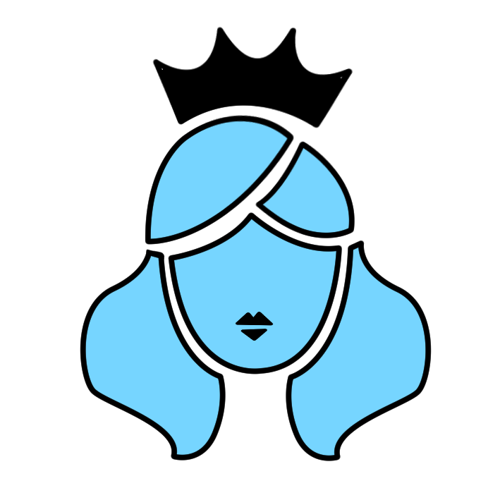
-
The Archer can take part to the killing of an opponent's piece, by moving on
the same row or column of that opponent's piece.
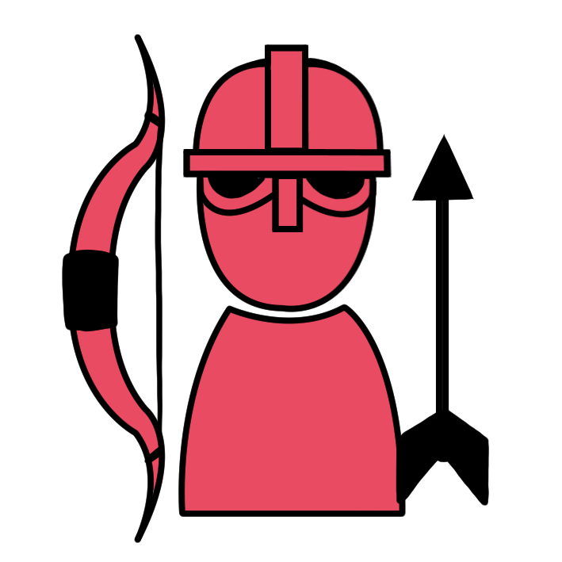
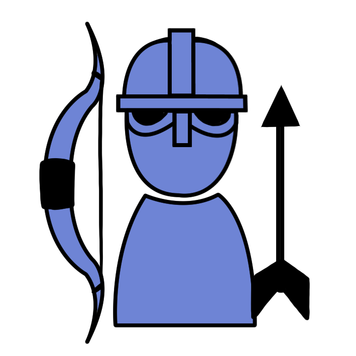
-
The Shield is a piece that can survive to a killing once.
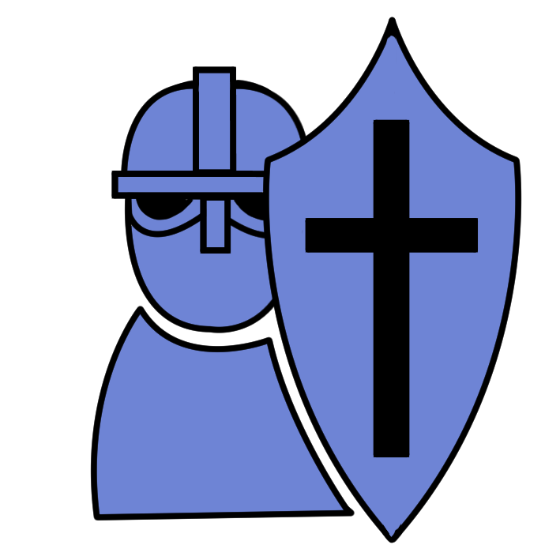
-
The Swapper can swap its position with one of the opponent's pieces
(excluding the King).
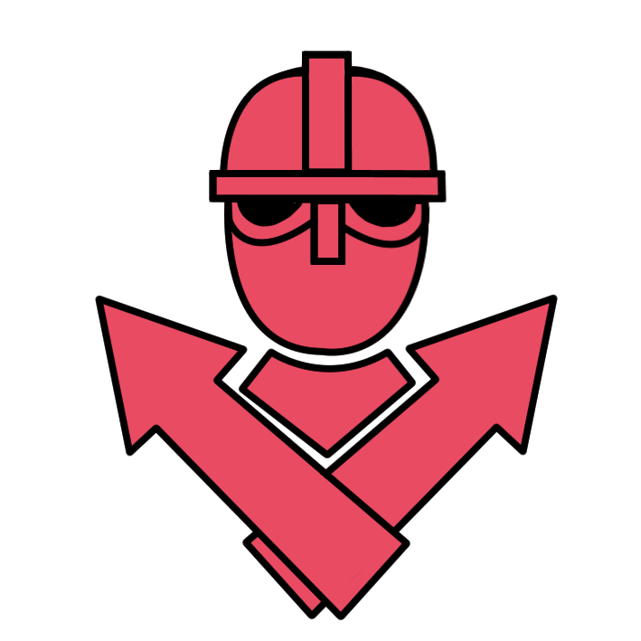
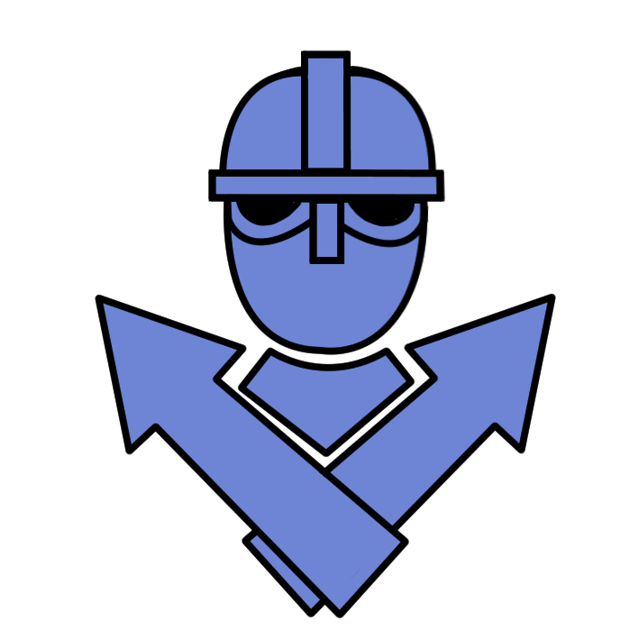
The number of pieces for both teams is the same as in the classic mode of the game.
Each team has one Queen, two Archers, two Shields and one Swapper.
The defending team includes a single King as in the classic mode.
The remaining pieces are Basic Pieces for both teams.
Four Sliders are placed on the board in fixed locations.